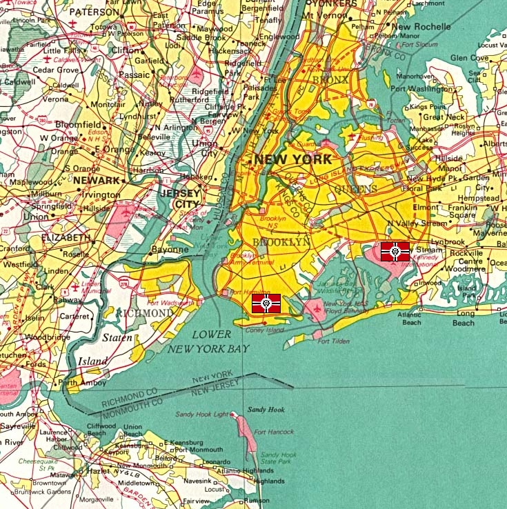

New York New York
North America, New York City Coastal Urban Fortress Nimbus Schatzen Used as the naval fortress linking California Base to Africa and Asia, New York is not quite as important as California, Odessa or Baikonour, but all the same is a key holding in the TAFs operations. It is here that Zeons air fleet is serviced, with the largest number of Gaws and Dopps of any of its fortresses. From here the Duchy runs bombers to western Europe and the oceans, assisting in pushing the Earth Federation off the face of Eurasia. The fortress is situated in the old city of New York, badly damaged by the war but still containing a huge number of people, it is one of the thickest urban areas in North America. Nimbus Schertzen The incidents surrounding Nimbus's promotion to commander of New York are somewhat strange, but it is known that he maintains good contacts with both Ghinius Sahalin and Ghiren Zabi. The TAF commander is something of a maverick, his actions generally wild and unpredictable. He is however a devastating mobile suit pilot, his Efreet normally armed to the teeth and preferring close combat. Nimbus is not known to give mercy to his enemies. New York  |